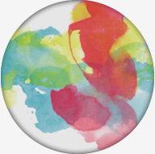

Designing for Colourblind Users
Presentation by Victoria Canning-Choi
How many people are affected by colour blindess?
1/12 men (8%) and 1/200 woman are colourblind. This makes up 4.5% of the world's population.
Chances are there is someone in this room who is colourblind.
What does this look like?

Normal Green-Type Red-Type Blue-Type
source: http://wearecolorblind.com/
How can we choose colour blind friendly colour palettes?
Monochrome Palettes
A colour palette using only one colour in multiple shades.
How do monochrome palettes help?
Even if the user cannot see the exact shade you are intending, they are able to see the same difference in shade.
Example

Normal Green-Type
Contrasting Colours
Contrast of colours is the difference between colours. Contrast can be accomplished through hue, value, and chroma.

Why is high contrast important?
If contrast is too low, what contrast that may appear to you may be invisible for somone who is colour blind.
It is important to use at least 2 of hue, value, and chroma when creating high contrast.
Example
Normal Red-Type
How can we design better?
Don't solely associate colour with feedback
Using colour is a helpful visual cue, but it's important it's not the only visual cue to relay information to the user.
A colour blind user may have a hard time noticing quickly identifying this visual cue.
Solution: Redundancy Gain
source: Christopher Wickens et al. An Introduction to Human Factors Engineering
Example
Normal Green-Type